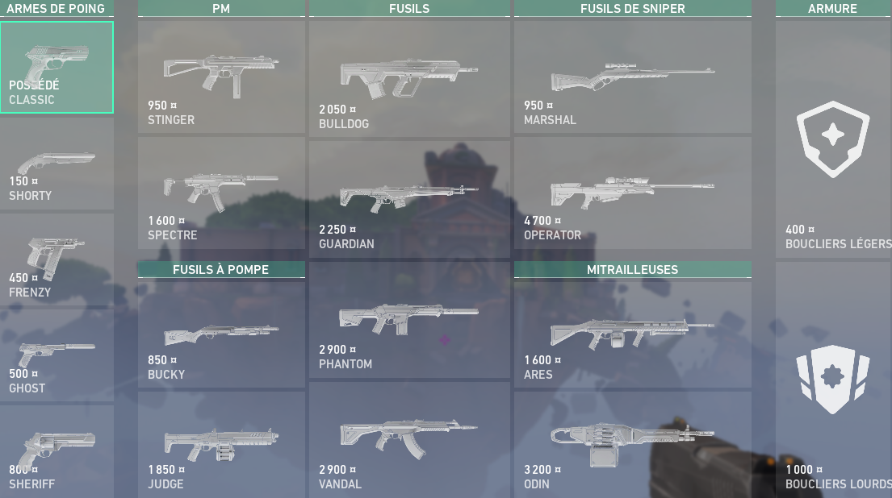
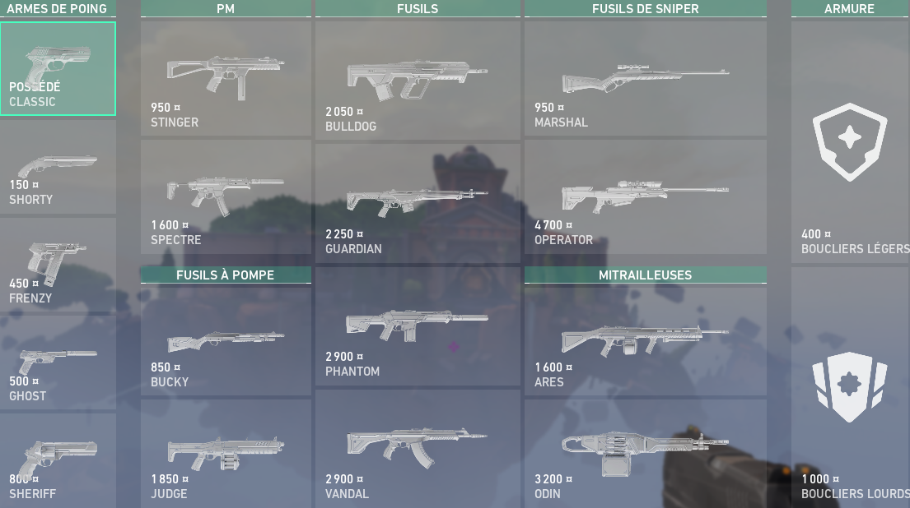

Accueil
Les armes
Les agents
Les maps

Accueil
Les armes
Les agents
Les maps
Fusils :
(Armes principales)
- Bulldog (prix : 2050)
- Guardian (prix : 2250)
- Phantom (prix : 2900)
- Vandal (prix : 2900)
PM :
(Armes principales)
- Stinger (prix : 950)
- Spectre (prix : 1600)
Mitralleuses :
(Armes principales)
- Ares (prix : 1600)
- Odin (prix : 3200)
Snipers :
(Armes principales)
- Marshal (prix : 950)
- Operator (prix : 4700)
Pompes :
(Armes principales)
- Bucky (prix : 850)
- Judge (prix : 1850)
Pistolets :
(Armes secondaires)
- Classic (prix : gratuit)
- Shorty (prix : 150)
- Frenzy (prix : 450)
- Ghost (prix : 500)
- Sheriff (prix : 800)
Le shield :
(25 ou 100 PV de plus)
- Boucliers légers (prix : 400)
- Boucliers lourds (prix : 1000)
⚠️ Aucune arme dans Valorant n’est strictement bonne ou mauvaise (sauf peut-être le pistolet classic). Chaque arme a ses propres
circonstances uniques dans lesquelles elle excelle et les comprendre peut vous aider à tirer le meilleur parti de vos Creds. Que vous soyez à
court d’argent ou que vous vous procuriez une arme bon marché pour surprendre l’équipe ennemie, voici tout ce que vous devez savoir sur le choix
de l’arme dans Valorant.